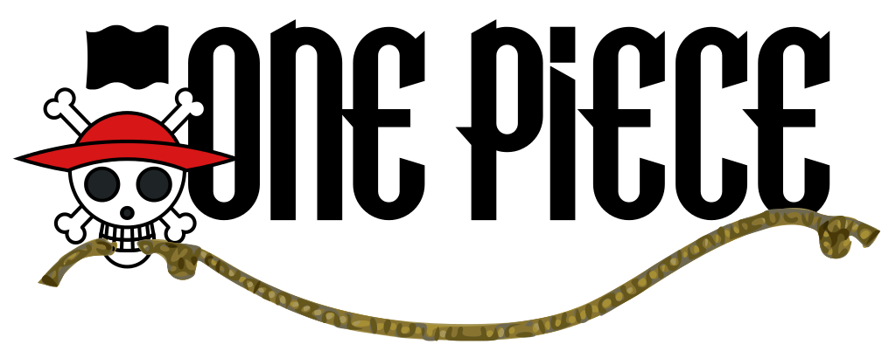

<!DOCTYPE html>
<html lang="en">
<head>
    <meta charset="UTF-8">
    <meta http-equiv="X-UA-Compatible" content="IE=edge">
    <meta name="viewport" content="width=device-width, initial-scale=1.0">
    <title>Document</title>
</head>
<body>
    
</body>
</html>
<html lang="en">
<head>
    <meta charset="UTF-8">
    <meta http-equiv="X-UA-Compatible" content="IE=edge">
    <meta name="viewport" content="width=device-width, initial-scale=1.0">
    <link rel="stylesheet" href="accueil_2.css">
    <title>Manga4All</title>
</head>
<body>
    <header>
        <div id="logo">
            <a href="../HTML/accueil v2.html"></a>
        </div>
        <div id="navigation">
            <nav>
                <ul id="barreNav">
                    <li><a href="../HTML/Séries.html" target="_blank">Séries</a></li>
                    <!--
                        <ul class="sous_liste">
                            <li>Bleach</li>
                            <li>Dragon Ball</li>
                            <li>My Hero Academia</li>
                            <li>Naruto</li>
                            <li>One Piece</li>
                            <li>Saint Seiya</li>
                        </ul>
                    -->
                    <li>Auteurs</li>
                    <!--
                    <ul class="sous_liste">
                        <li>Akira Toriyama</li>
                        <li>Eiichiro Oda</li>
                        <li>Kôhei Horikoshi</li>
                        <li>Masami Kurumada</li>
                        <li>Masashi Kishimoto</li>
                        <li>Tite Kubo</li>
                    </ul>
                -->
                    <li>Editions</li>
                    <!--
                    <ul class="sous_liste">
                        <li><a href="https://www.glenat.com/" target="_blank">Glénat</a></li>
                        <li><a href="https://www.kana.fr/" target="_blank">Kana</a></li>
                    </ul>
                -->
                     <li><a href="mailto:d.weishar@427hotmail.fr">Contact</a></li>
                </ul>
            </nav>
        </div>
    </header> 
<!--barre de recherche-->
    <div id="barre_recherche">
            <input type="search" id="barre_recherche" name="barre_recherche" placeholder="Rechercher">
            
    </div>
<!--auteurs-->
    <article>
        
        <h1>Tite Kubo</h1>
        <p>Auteur de:
            <ul>
                <li>Zombiepowder (1999-2000)</li>
                <li>Bleach (2001-20016)</li>
                <li>Burn The Witch (2020)</li>
            </ul>
        </p>
        <p>Pour trouver la bonne occasion, c'est par ici</p>
    </article>
    <article>
        
        <h1>Akira Toriyama</h1>
        <p>Auteur de:
            <ul>
                <li>Dr Slump (1980-1984)</li>
                <li>L'Apprenti mangaka (1982-1984)</li>
                <li>Dragon Ball (1984-1995)</li>
                <li>Neko Majin (1999-2005)</li>
                <li>Jaco the Galactic Patrolman (2013)</li>
                <li>Dargon Ball Super (scénario et concept original, 2015-en cours)</li>
            </ul>
        </p>
        <p>Pour trouver la bonne occasion, c'est par ici</p>
    </article>
    <article>
        
        <h1>Kôhei Horikoshi</h1>
        <p>Auteur de:
            <ul>
                <li>Crazy Zoo (2010-2011)</li>
                <li>My Hero Academia (2014-en cours)</li>
            </ul>
        </p>
    </article>
    <article>
        
        <h1>Masashi Kishimoto</h1>
        <p>Auteur de:
            <ul>
                <li>Naruto (1999-2014)</li>
            </ul>
        </p>
    </article>
    <article>
        
        <p>Résumé de la série: L'histoire de One Piece se déroule dans un monde fictif dominé par les océans, où certains pirates aspirent à une ère de liberté et d'aventure connue comme « l'âge d'or de la piraterie ». 
            Cette époque fut inaugurée à la suite des derniers mots prononcés par le roi des pirates, Gol D. Roger, surnommé Gold Roger avant son exécution. 
            Roger annonce au monde que ses habitants étaient libres de chercher toutes les richesses qu'il avait accumulées durant sa vie entière, le « One Piece».
            Vingt-deux ans après l'exécution de Roger, l'intérêt pour le One Piece s’effrite. Beaucoup y ont renoncé, certains se demandent même s'il existe vraiment. 
            Même si les pirates sont toujours une menace pour les habitants, la Marine est devenue plus efficace pour contrer leurs attaques sur les quatre mers : East Blue, North Blue, West Blue et South Blue. 
            Pourtant, ce changement n'a pas dissuadé Monkey D. Luffy, un jeune garçon, de vouloir devenir le successeur du légendaire Roger. 
            Il va ainsi partir à l’aventure en se donnant comme premier objectif de créer un équipage afin de rejoindre la mer de Grand Line, où la fièvre de la « grande vague de piraterie » continue de sévir, et où de nombreux grands noms de la piraterie sont à la poursuite du One Piece, supposé être sur la dernière île de cette grande mer, Laugh Tale (orthographe voulue par Oda). 
            Luffy part à l'aventure après sa rencontre avec Shanks le Roux, le capitaine d'un navire de pirates qui a passé un an dans son village et l'a sauvé d'un monstre marin en sacrifiant son bras gauche. 
            Depuis, Luffy porte son chapeau de paille qu'il lui a offert pour marquer la promesse de devenir un grand pirate. 
            Ce chapeau deviendra donc le symbole de son équipage. C'est à cette époque qu'il mange un fruit du démon que détenait Shanks : le fruit du Gum Gum, et qui rend son corps élastique. 
            Les fruits du Démon une fois mangés donnent des capacités spéciales à leur détenteur, qui perd par la même occasion toutes ses forces lorsqu'il est immergé dans l'eau de mer. 
            Luffy et son équipage feront de nombreuses rencontres qui renforceront leur amitié et élargiront leurs équipages. 
            Mais ils devront se confronter aux équipages pirates prônant violence et pouvoirs, ainsi qu'à la Marine et ses soldats, garants de la justice. </p>
        <p>Auteur:Eiichiro Oda</p>
    </article> <article>
        
        <p>Résumé de la série: Dans la mythologie grecque, depuis la nuit des temps, lorsque les forces du Mal s’éveillent, des Chevaliers (Saints) vêtus de leurs armures (Cloth) font leur apparition pour protéger la Terre. 
            On les appelle les Chevaliers d’Athéna.
            Lors de l’un de ses voyages en Grèce, Mitsumasa Kido fait la connaissance d’un garçon agonisant, Aiolos, Chevalier d’Or du Sagittaire. 
            Celui-ci confie à Mitsumasa Kido l’armure d’Or du Sagittaire et Saori, un bébé. Aiolos présente la petite fille comme étant la réincarnation de la déesse Athéna. 
            Il lui demande de trouver et d'entraîner des jeunes garçons courageux afin de protéger l’enfant, et le futur chevalier d'or du sagittaire. 
            Seize ans après, alors que Mitsumasa Kido a envoyé 100 enfants aux quatre coins du monde pour devenir chevaliers, seuls dix d'entre eux reviennent : 
            Jabu de la licorne, Ichi de l'hydre, Nachi du loup, Ban du petit lion, Geki de l'ours, Hyoga du cygne, le mystérieux Ikki du phoenix, Shiryu du dragon, Shun d'andromède et Seiya de pégase. 
            Celui-i arrive à rassembler plusieurs de ses compagnons pour protéger Saori. Arriveront-ils à la garder vivante, face aux menaces qui veulent la mort d'Athéna?
            </p>
        <p>Auteur: Masami Kurumada</p>
    </article>
</body>
</html>

